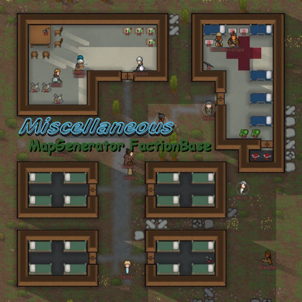

[Haplo] Miscellaneous Misc系列模组
殖民者编组功能、养蜂、战术计算机、探险、纳米复制仪、射击格斗训练设施、机器人、人工智能
[Haplo] Miscellaneous Misc系列模组
模组信息
作者：Haplo（代码）、mrofa（贴图）
翻译：风之起灵、Biscuit
原始发布页面： Ludeon 论坛
源代码：请查看原始发布页面
许可协议： CC BY-SA 4.0
翻译内置进度： 已内置
订阅与下载
注意：Misc. Incidents 事件 暂未更新至A16
模组简介
注意：Misc系列模组由一个核心模组和多个子模组组成，部分子模组需要核心模组支持才能正常运行
提示
Misc系列模组的研究项目均带有「Misc」前缀

Miscellaneous ‘CORE’ Misc. 核心
模组版本： 0.16.4
适配游戏版本： 0.16.1393不需要新建殖民地
注意：这是Misc系列模组的核心模组，需要在其他子模组之前激活！
仿生大脑芯片
电子大脑芯片
轨道枪
（只能从商人处购买）
「殖民者编组」功能
按键6、7、8、9可用于定义编组和集合位置。
征召你想定义编组和集合位置的殖民者，并命令他们到达目标位置。选中你想添加进编组的人，按下Shift+6（编入编组1）。
你的征召的位置和选定的殖民者就被添加进编组了。
按下数字键6即可将编组内的殖民者召集到预定位置。数字键6、7、8、9的用法相同。
Misc. Bees ‘n’ Honey Misc. 蜜蜂与蜂蜜
模组版本： 0.16.5
适配游戏版本： 0.16.1393不需要新建殖民地
独立Mod，可单独安装
研究「Misc：养蜂」
植物「空心树」：野外随机出现，收获得到物品「蜂房（有蜂后）」，用于建造蜂箱。
物品「蜂房（有蜂后）」：用于建造蜂箱，可在空心树上收获或通过蜂箱繁殖新的蜂后获得。
建筑「蜂箱」：养蜂获得蜂蜜，需要在范围内有鲜花。
食物「蜂蜜」
成瘾品「蜂蜜酒」
Misc. Incidents Misc. 事件
模组版本： 0.15.5
适配游戏版本： 0.15.1284不需要新建殖民地
注意：需要Misc.核心
建筑「战术计算机」：有集合殖民者的功能，会触发事件「异常事件」。同时也是娱乐设施。
建筑「计算机终端」：与战术计算机配合使用，召集殖民者。同时也是娱乐设施。
事件「人工制品」：地图上随机出现。激活后有几率获得各种资源，也有几率引来敌人。
事件「坠毁的救生舱」：类似原版「坠毁的逃生舱」。
事件「异常事件」：由战术计算机触发，属于探险任务。可派遣殖民地前往调查。有几率获得高科技装备动力装甲、电荷步枪、「轨道枪」、大脑芯片等。也有几率引来敌人。
事件「传闻……」：由访客触发，属于探险任务。可派遣殖民者前往。有几率获得一些武器、黄金或得到新成员。也有几率引来敌人。
「注意」探险任务殖民者会离开地图数天！

Misc. MapGenerator Misc. 地图生成器
模组版本： 0.16.6
适配游戏版本： 0.16.1393注意：需要新建殖民地
注意：需要Misc.核心
地图生成类Mod，生成比原版地图建筑遗迹更复杂，更多样的建筑遗迹。

Misc. MapGen FactionBase Misc. 地图生成器-派系基地
模组版本： 0.16.7
适配游戏版本： 0.16.1393不需要新建殖民地
独立Mod，可单独安装
派系基地的蓝图地图生成器。
有时候会从可用蓝图中生成派系基地。
为了避免重复，会基于蓝图数量来决定几率。
交替形式继续使用原版的生成器。（原版几率85&-50%）。
你也可以通过Github贡献蓝图：https://github.com/HaploX1/RimWorld-MapGenBaseBlueprints
Misc. Objects Misc. 武装
模组版本： 0.16.2
适配游戏版本： 0.16.1393不需要新建殖民地
注意：需要Misc.核心
炮台「炮台基座」：控制所安装武器的手动炮台。
炮台「自动炮台基座」：能控制所安装武器的自动炮台。受损严重时会发生爆炸。智能通过购买获得。
计算机终端：与战术计算机配合使用，召集殖民者。同时也是娱乐设施。
建筑「纳米打印机」、「纳米扫描仪」：可以对武器进行复制。研究「Misc：纳米复制」后解锁建筑。注意：复制品的品质可能不是最好的。
Misc. Training Facility Misc. 训练设施
模组版本： 0.16.3
适配游戏版本： 0.16.1393不需要新建殖民地
独立Mod，可单独安装
「射击标靶」、「格斗假人」、「箭靶」
用于练习射击与格斗技能，射击标靶与格斗假人可强制命令进行练习，同时也是娱乐设施。箭靶单纯作为娱乐设施。
Misc. Robot Misc. 机器人
模组版本： 0.16.5
适配游戏版本： 0.16.1393不需要新建殖民地
注意：需要Misc.核心
专用机器人「搬运机」、「清洁机」
新贸易商类型「机器人贸易商」：出售以上两种专用机器人的基站，一个基站装备一个机器人。
Misc. MAI Misc. 人工智能
模组版本： 0.16.2
适配游戏版本： 0.16.1393不需要新建殖民地
注意：需要Misc.核心
旧翻译为智能机器人。
移动人工智能：英文全称 Mobile Artificial Intelligence，缩写MAI。
与人类相媲美的单位，可以代替你的殖民者从事所有工作（除了艺术）。
使用方法：
- 完成 Misc.MAI 的研究
- 建造「人工智能自动装配器」
- 点击按钮「开始生成」（你需要指派一名「搬运工作」的殖民者往装配器搬运500钢铁和350白银）
- 等待一小段时间后，生产出的人工智能会出现在装配器的出口
- 将未激活的移动人工智能安装到某处，在清单中添加「激活人工智能」（可选择性别）
提示
人工智能分为普通型和增强型两种
普通型技能无学习兴趣度，升级速度缓慢
增强型的人工智能的技能全部「双火」（兴趣度：狂热），升级很快，但需要消耗「AI角色核心」来激活
这是个伟大的模组，这个系列曾经的商队子模组和事件子模组，现在被官方吸收成为如今原版中的远行队。